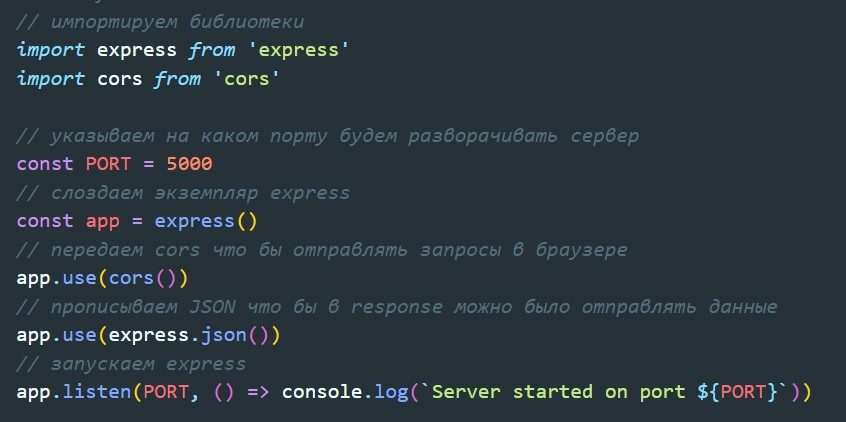

Клиент отправляет запрос, но сервер ему ничего не возвращает. Запрос просто повисает и ждетответа. В случае если время ожидания закончилось, то мы с клиента просто отправляем запрос заново и опять продолжаем ждать. И ждем до тех пор пока не произойдет како-либо событие. На примере с чатом, это событие может быть отправка сообщения каким-то другим пользователем. Запрос все еще висит, но после того как другой пользователь отправил сообщение, срабатывает какое-то событие и сервер возвращает ответ на клиент. В этом случаем мы сразу же отправляем новый запрос и он точно так же повисает до следующего события.
1 Инициализируем проект
npm init -y2 Устанавливаем зависимости
npm i express cors ws nodemon3 Далее создаем исполняемый файл, который пропишем в качестве main в package.json. Так же в в scripts укажем команду для запуска исполняемого файла через nodemon
4 Прописываем стандартные настройки сервера
5 Создаем два дефолтных эндпоинта, get запрос на получение сообщения и post на отправку сообщения
Для того что бы мы могли, по какому-либо событию возвращать ответ на клиент, нам понадобится способ управления событиями в Node.JS - events
После импорта создаем event emitter с помощью которого мы можем события регистрировать, подписываться на них и соответственно вызывать.
Теперь напишем обработку отправки сообщения
После того как мы приняли сообщение, нам необходимо уведомить всех кто подключен к нам о том, что поступило новое сообщение
emittor.onse - метод который вызовет событие один раз. Первым аргументом мы передаем название события, в нашем случае это - newMessage, вторым параметром передаем callback который будет выполнен в случае если событие случилось. Callback будет принимать один параметр - сообщение, и это же сообщение мы будем возвращать в JSON всем кто подключен.
Теперь как же событие будет происходить и как оно будет получать это сообщение. Возвращаемся в метод POST.
Обращаемся к emiter и вызываем метод emit - который создает событие. Метод принимает первым аргументом название события, а вторым принимает элемент, который будет передан в это событие. т.е. такми образом callback в onse получит наш message
В результате весь файл будет выглядеть вот так:
Разворачиваем React приложение